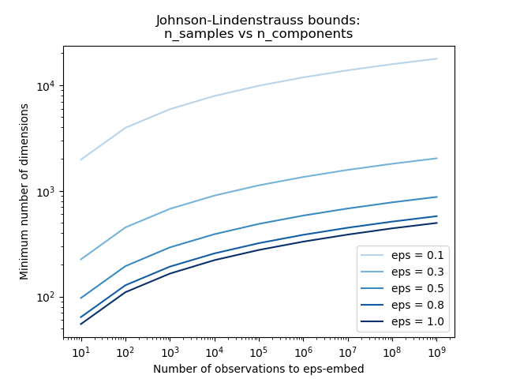
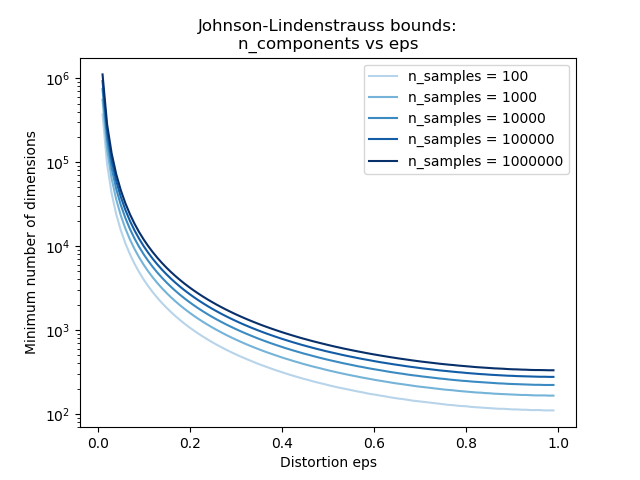
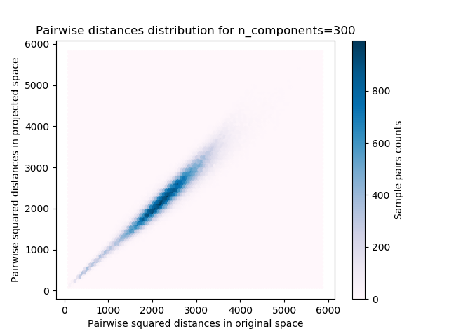
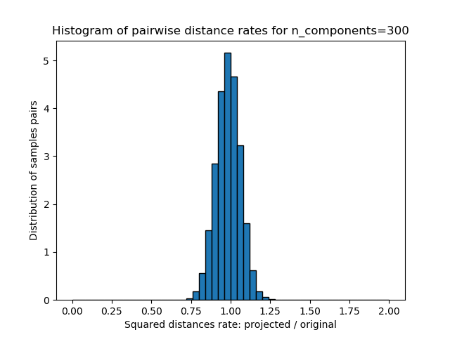
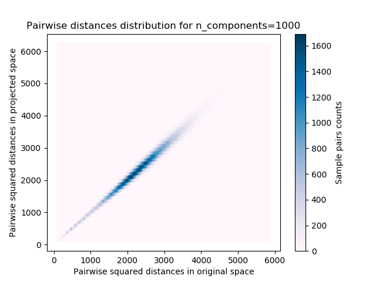
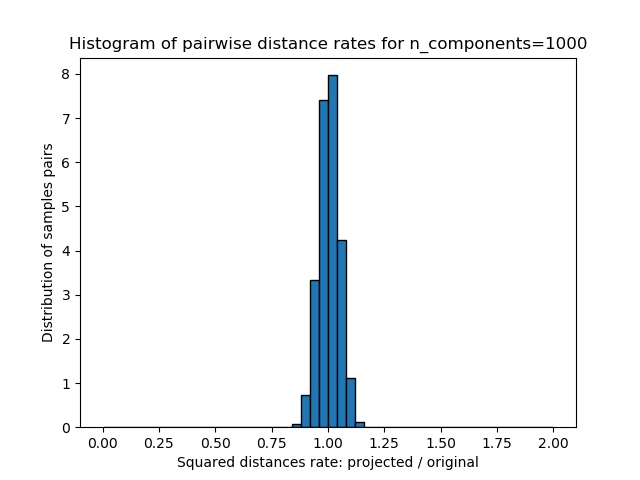
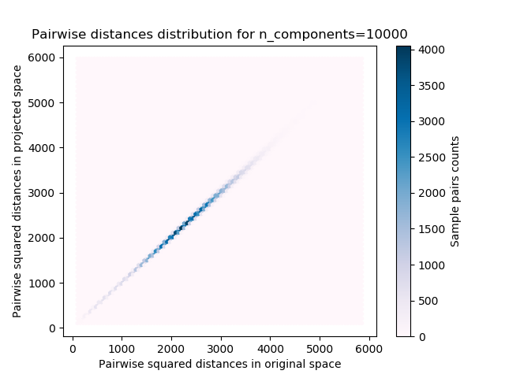
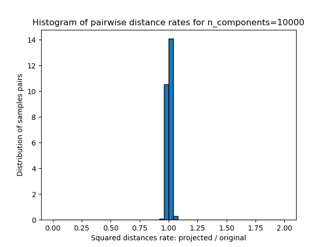

Note
Click here to download the full example code
The Johnson-Lindenstrauss bound for embedding with random projections¶
The Johnson-Lindenstrauss lemma states that any high dimensional dataset can be randomly projected into a lower dimensional Euclidean space while controlling the distortion in the pairwise distances.
Theoretical bounds¶
The distortion introduced by a random projection p is asserted by the fact that p is defining an eps-embedding with good probability as defined by:
Where u and v are any rows taken from a dataset of shape [n_samples, n_features] and p is a projection by a random Gaussian N(0, 1) matrix with shape [n_components, n_features] (or a sparse Achlioptas matrix).
The minimum number of components to guarantees the eps-embedding is given by:
The first plot shows that with an increasing number of samples n_samples,
the minimal number of dimensions n_components increased logarithmically
in order to guarantee an eps-embedding.
The second plot shows that an increase of the admissible
distortion eps allows to reduce drastically the minimal number of
dimensions n_components for a given number of samples n_samples
Empirical validation¶
We validate the above bounds on the digits dataset or on the 20 newsgroups text document (TF-IDF word frequencies) dataset:
- for the digits dataset, some 8x8 gray level pixels data for 500
handwritten digits pictures are randomly projected to spaces for various
larger number of dimensions
n_components. - for the 20 newsgroups dataset some 500 documents with 100k
features in total are projected using a sparse random matrix to smaller
euclidean spaces with various values for the target number of dimensions
n_components.
The default dataset is the digits dataset. To run the example on the twenty newsgroups dataset, pass the –twenty-newsgroups command line argument to this script.
For each value of n_components, we plot:
- 2D distribution of sample pairs with pairwise distances in original and projected spaces as x and y axis respectively.
- 1D histogram of the ratio of those distances (projected / original).
We can see that for low values of n_components the distribution is wide
with many distorted pairs and a skewed distribution (due to the hard
limit of zero ratio on the left as distances are always positives)
while for larger values of n_components the distortion is controlled
and the distances are well preserved by the random projection.
Remarks¶
According to the JL lemma, projecting 500 samples without too much distortion will require at least several thousands dimensions, irrespective of the number of features of the original dataset.
Hence using random projections on the digits dataset which only has 64 features in the input space does not make sense: it does not allow for dimensionality reduction in this case.
On the twenty newsgroups on the other hand the dimensionality can be decreased from 56436 down to 10000 while reasonably preserving pairwise distances.
- 
- 
- 
- 
- 
- 
- 
- 
Out:
Embedding 500 samples with dim 64 using various random projections
Projected 500 samples from 64 to 300 in 0.010s
Random matrix with size: 0.029MB
Mean distances rate: 0.98 (0.08)
Projected 500 samples from 64 to 1000 in 0.026s
Random matrix with size: 0.096MB
Mean distances rate: 1.00 (0.05)
Projected 500 samples from 64 to 10000 in 0.243s
Random matrix with size: 0.961MB
Mean distances rate: 1.00 (0.02)
print(__doc__)
import sys
from time import time
import numpy as np
import matplotlib
import matplotlib.pyplot as plt
from distutils.version import LooseVersion
from sklearn.random_projection import johnson_lindenstrauss_min_dim
from sklearn.random_projection import SparseRandomProjection
from sklearn.datasets import fetch_20newsgroups_vectorized
from sklearn.datasets import load_digits
from sklearn.metrics.pairwise import euclidean_distances
# `normed` is being deprecated in favor of `density` in histograms
if LooseVersion(matplotlib.__version__) >= '2.1':
density_param = {'density': True}
else:
density_param = {'normed': True}
# Part 1: plot the theoretical dependency between n_components_min and
# n_samples
# range of admissible distortions
eps_range = np.linspace(0.1, 0.99, 5)
colors = plt.cm.Blues(np.linspace(0.3, 1.0, len(eps_range)))
# range of number of samples (observation) to embed
n_samples_range = np.logspace(1, 9, 9)
plt.figure()
for eps, color in zip(eps_range, colors):
min_n_components = johnson_lindenstrauss_min_dim(n_samples_range, eps=eps)
plt.loglog(n_samples_range, min_n_components, color=color)
plt.legend(["eps = %0.1f" % eps for eps in eps_range], loc="lower right")
plt.xlabel("Number of observations to eps-embed")
plt.ylabel("Minimum number of dimensions")
plt.title("Johnson-Lindenstrauss bounds:\nn_samples vs n_components")
# range of admissible distortions
eps_range = np.linspace(0.01, 0.99, 100)
# range of number of samples (observation) to embed
n_samples_range = np.logspace(2, 6, 5)
colors = plt.cm.Blues(np.linspace(0.3, 1.0, len(n_samples_range)))
plt.figure()
for n_samples, color in zip(n_samples_range, colors):
min_n_components = johnson_lindenstrauss_min_dim(n_samples, eps=eps_range)
plt.semilogy(eps_range, min_n_components, color=color)
plt.legend(["n_samples = %d" % n for n in n_samples_range], loc="upper right")
plt.xlabel("Distortion eps")
plt.ylabel("Minimum number of dimensions")
plt.title("Johnson-Lindenstrauss bounds:\nn_components vs eps")
# Part 2: perform sparse random projection of some digits images which are
# quite low dimensional and dense or documents of the 20 newsgroups dataset
# which is both high dimensional and sparse
if '--twenty-newsgroups' in sys.argv:
# Need an internet connection hence not enabled by default
data = fetch_20newsgroups_vectorized().data[:500]
else:
data = load_digits().data[:500]
n_samples, n_features = data.shape
print("Embedding %d samples with dim %d using various random projections"
% (n_samples, n_features))
n_components_range = np.array([300, 1000, 10000])
dists = euclidean_distances(data, squared=True).ravel()
# select only non-identical samples pairs
nonzero = dists != 0
dists = dists[nonzero]
for n_components in n_components_range:
t0 = time()
rp = SparseRandomProjection(n_components=n_components)
projected_data = rp.fit_transform(data)
print("Projected %d samples from %d to %d in %0.3fs"
% (n_samples, n_features, n_components, time() - t0))
if hasattr(rp, 'components_'):
n_bytes = rp.components_.data.nbytes
n_bytes += rp.components_.indices.nbytes
print("Random matrix with size: %0.3fMB" % (n_bytes / 1e6))
projected_dists = euclidean_distances(
projected_data, squared=True).ravel()[nonzero]
plt.figure()
plt.hexbin(dists, projected_dists, gridsize=100, cmap=plt.cm.PuBu)
plt.xlabel("Pairwise squared distances in original space")
plt.ylabel("Pairwise squared distances in projected space")
plt.title("Pairwise distances distribution for n_components=%d" %
n_components)
cb = plt.colorbar()
cb.set_label('Sample pairs counts')
rates = projected_dists / dists
print("Mean distances rate: %0.2f (%0.2f)"
% (np.mean(rates), np.std(rates)))
plt.figure()
plt.hist(rates, bins=50, range=(0., 2.), edgecolor='k', **density_param)
plt.xlabel("Squared distances rate: projected / original")
plt.ylabel("Distribution of samples pairs")
plt.title("Histogram of pairwise distance rates for n_components=%d" %
n_components)
# TODO: compute the expected value of eps and add them to the previous plot
# as vertical lines / region
plt.show()
Total running time of the script: ( 0 minutes 1.648 seconds)